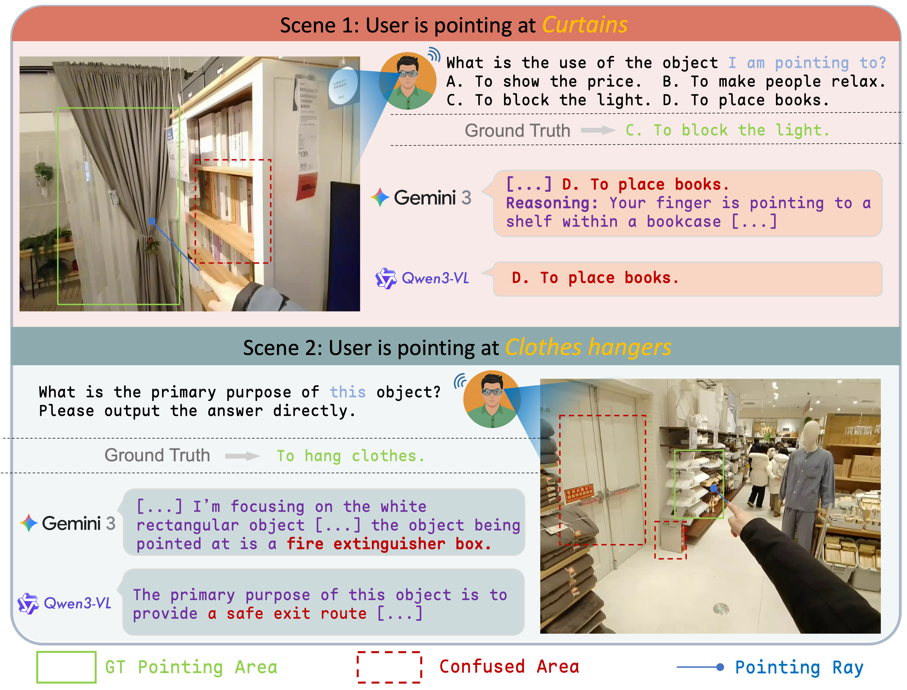
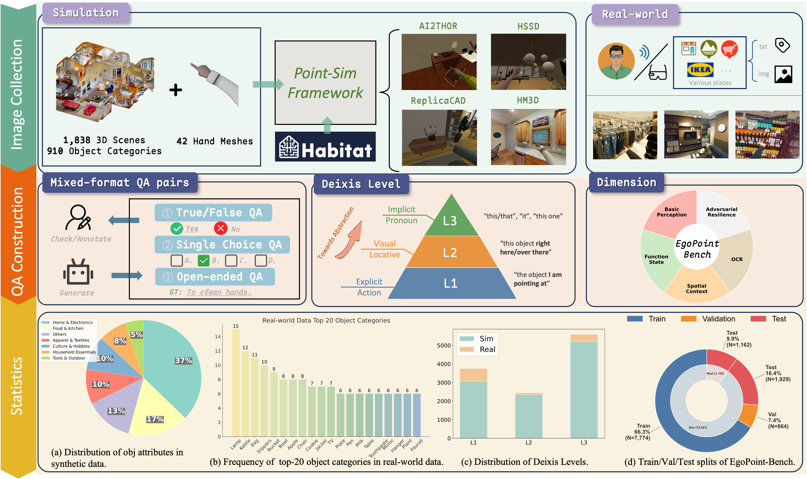
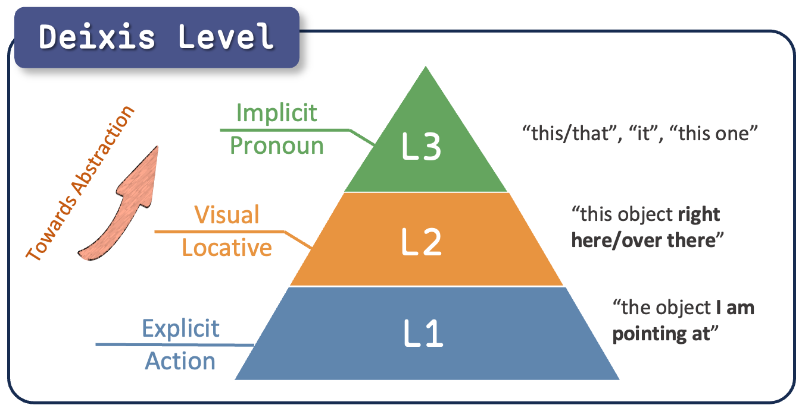
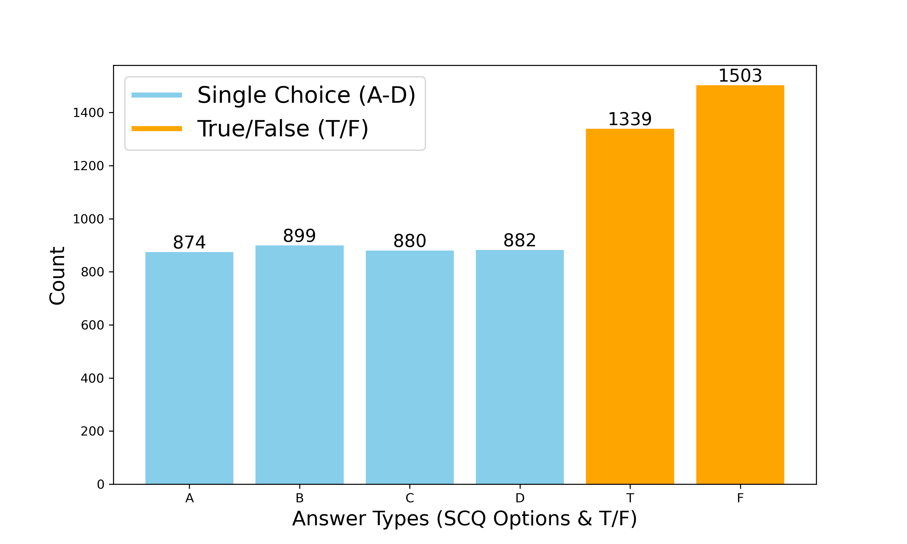
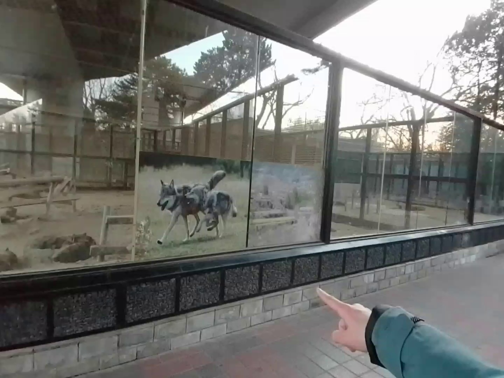
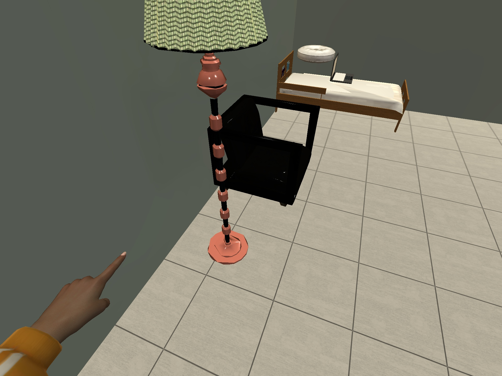
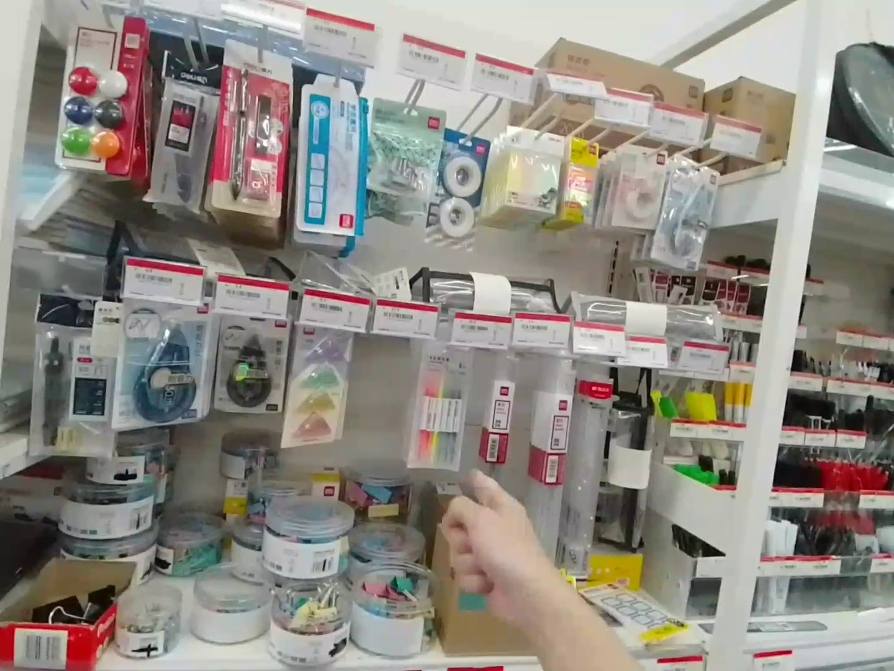
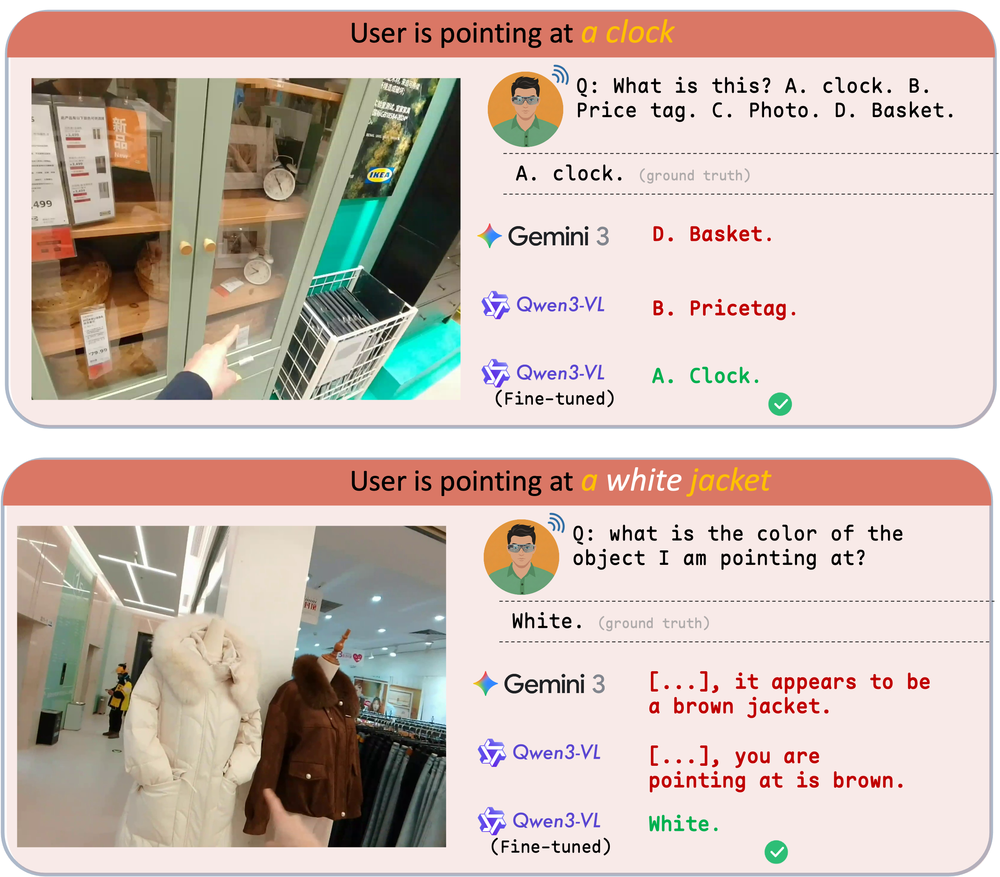

Overview + Motivation
Why egocentric pointing remains hard for current MLLMs
EgoPoint-Bench evaluates multimodal pointing reasoning in egocentric vision. It targets a core failure mode we call referential hallucination: models answer about nearby or visually salient objects instead of the true referent indicated by a first-person pointing gesture.
This failure is especially common in egocentric scenes, where hand proximity, clutter, and partial visibility make naive visual grounding unreliable. EgoPoint-Bench is built to expose that gap directly, rather than treating pointing as generic visual QA.
The benchmark combines a scalable simulation pipeline with real-world capture, covering basic perception, function and state, spatial context, OCR, and adversarial resilience.

Pipeline
From Point-Sim supervision to real-world evaluation

Highlights
What the benchmark covers
Capability Taxonomy
Five evaluation dimensions: Basic Perception, Function & State, Spatial Context, OCR, and Adversarial Resilience.
Hierarchical Deixis
Three deixis levels capture the ambiguity spectrum from explicit reference to fully implicit pronouns.
Mixed Question Format
Multiple-choice, true/false, and open-ended questions balance objective benchmarking with realistic user intent.
Sim-to-Real Focus
The dataset is constructed to support training and transfer, not just static leaderboard evaluation.


Examples
Mini dataset preview



Failure Mode
Referential hallucination is visually plausible but wrong
Beyond the teaser examples, the error pattern is consistent: strong multimodal models often confuse the intended referent with objects close to the hand, along cluttered shelves, or in visually dominant regions.
EgoPoint-Bench is designed to measure this failure directly and to support methods that improve grounded gesture reasoning under real egocentric ambiguity.
